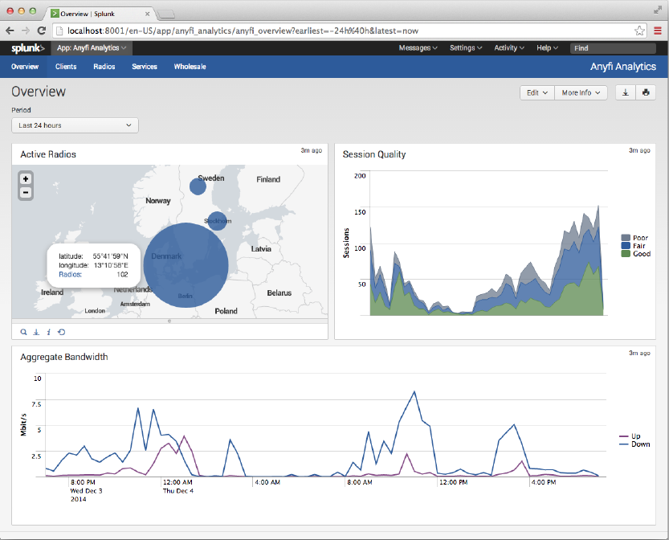

Introduction
In this project, we are going to introduce Software Defined Wireless Network (SDWN).
We have made a prototype of SDWN by using Anyfi in order to give a brief idea.
What is Software Defined Wireless Network (SDWN)?
Software Defined Wireless Network is an expansion of Software Defined Network (SDN), which decouples the control plane and the data plane of the network. While SDN foci on the wired networks, SDWN considers the wireless part as well. The underlying infrastructure can be abstracted from the wireless application.
Anyfi
Anyfi is a SDN solution for
wireless network. It separates the data plane and
the control plane, as well as separates the radio
from the services.
The Anyfi architecture is composed of three parts:
Radios, Services and Controller.
-
Radio
A Radio has two main responsibilities: constantly monitoring the radio environment to detect when a mobile device comes within range and, when so instructed by the Controller, allocating Virtual BSSes for its preferred networks. -
Service
The Service implements all the higher level functions of the IEEE 802.11 stack including authentication and encryption. All processing on Layer 3 and above takes place here. -
Controller
The Controller coordinates Radios and Services, connecting them to form complete IEEE 802.11 stacks on demand. It communicates with other network elements through a lightweight UDP/IP based control plane protocol in many ways similar to DNS.
Advantages of Anyfi
-
Flexibility
Anyfi decouples the radios and the services. Each components can be chosen independently provided that they are compatible with the Anyfi software.
Moreover, the centralized controller enables very flexible management of the services and the radios. -
Low cost
The Anyfi gateway often has another primary function, such as serving as the residential gateway for a fixed-line broadband subscriber. Anyfi prioritizes the traffic such that the primary function affected minimally.
No additional bandwidth, software and hardware is needed. -
Security
Security is important in all Wifi networks. To ensure the security, Anyfi implemented the following measures:- Strong mutual authentication In order to prevent man-in-the-middle attack, not only should the devices be authenticated to the network, the network should be authenticated to the devices, too.
- End-to-end encryption The data is encrypted all the way from the devices to the gateway in the trustd zone.
The whole channel of Anyfi is protected by WPA/WPA2, which ensures strong mutual authentication.
Anyfi use case -
Home Wifi
Anywhere
Zero Sign-On
The first use case is a zero sign-on solution that
allows the devices to connect to the home Wifi
anywhere.
Zero sign-on means that no registration or manual sign-on is needed. It will automatically use your home Wi-Fi passphrase for authentication.
Migrate Hotspot or Homespot
The second use case is migrating hotspots and homespots to a unified SDWN platform. People can access their hotspot anywhere.
With Anyfi technology, each device sees only the networks that are relevant to them.
Also, the fixed-line broadband subscriber is not impacted by the solution since both backhaul and radio resources are carefully managed. Fixed-line broadbacd subscriber is prioritied.
Prototype of SWDN by using Anyfi
Resources
- 1 ESXi server
- 5 VMs
- 1 Firewall server
- 2 Wireless Mesh routers
- 1 Client Device
Setup of Prototype
The picture on the right hand side shows the setup of our prototype.
The mobile AP acts as internet gateway.
Two mesh routers from backbone provide internet access to users.
Three Anyfi components (Anyfi-OPT, Anyfi-GW, and Anyfi-CTRL) are interconnected with each others to provide the SDWN service.
How to setup Anyfi network?
- Install server packages
- Compile firmware on embedded devices
- Config all the SDWN servers

How to setup Wireless Mesh
Use Back-N technology powered by P2MT.
The Back-N Technology
The research team in P2 Mobile Technologies led by Professor Peter Chong, Dr. Patrick Lam and Dr. Ivan Ho has invented the patent pending Back-N technology to eliminate the bottleneck. The Back-N technology enables the truly end-to-end 802.11n WMN backbone with which the WMN users can now enjoy an end-to-end bandwidth up to full 300Mbps within the entire WMN. That is, many bandwidth demanding applications such as video surveillance and location tracking can now take the full advantage of 802.11n’s high throughput as well as WMN’s extreme flexibility. The figure depicts how the Back-N technology running on our MeshRanger routers boosts the user’s WMN experience.How does our prototype work?
Two mesh routers will interconnected with wireless backbone (P2MT BackN technology). Mobile AP will provide internet access for the mesh network.
The access mesh router will build a PPTP tunnel to connect with anyfi sdwn core (placed in the P2MT network).
The access mesh router will connect to the anyfi controller(Anyfi-CTRL) and register the radio interface for the anyfi service.
The anyfi-gw will push the services configuration to the mesh access router by the control plane.
The radio interface of the mesh access router will responsible for delivery the 802.11 beacon for the configurated anyfi service.
Client can connect to the service via the SSID. The AAA will be handle by the Anyfi wlan-gw.
After the AAA process the client can go to the internet via the wlan-gw.
The anyfi-mgmt can provide the management plane for the whole sdwn, administator can access the client informantion by the “Splunk” anyfi management apps. All the services data will be displayed here.
